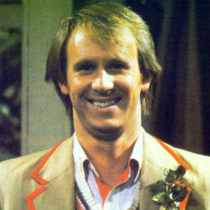

Portrayed by Peter Davison.
|  | Davison was born Peter Moffett in Streatham, London, son of an electrical engineer who was originally from Guyana. The family then moved to Knaphill in Surrey.[4] Before becoming an actor, he gained three O-levels at Winston Churchill School, St John's, Woking, Surrey, and then had several odd jobs, including a stint as a mortuary attendant |